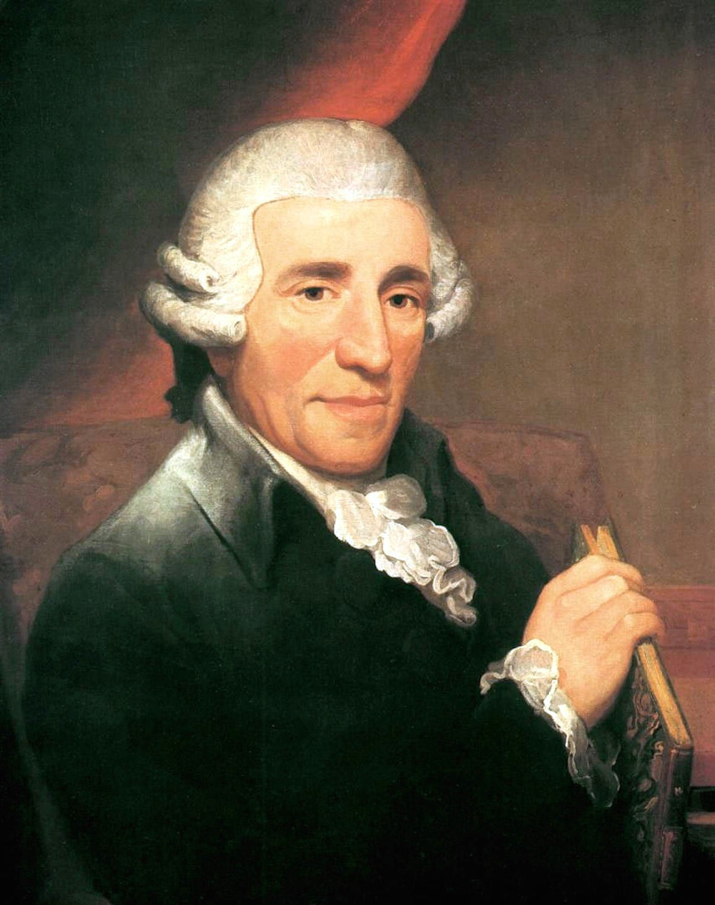

A bécsi klasszikus zene vagy bécsi klasszika korának az európai komolyzene történetében az 1750 és 1827
közötti időszakot nevezzük. Ezekben az évtizedekben alkottak azok a zeneszerzők, Haydn, Mozart és
Beethoven, akiket műveik stílusbeli kiegyensúlyozottsága, dallami, harmóniai és formai kidolgozottsága,
kifejezésbeli gazdagsága miatt mintaszerűnek, példaértékűnek, egyszóval klasszikusnak tekint a
zenetörténet-írás.
A bécsi klasszika közvetlen előzményét gyakran preklasszikának nevezik. Gyökerei visszanyúlnak a barokk
zene utolsó évtizedeihez: ekkor a rokokó divatja kezdte kiszorítani a „régimódinak” minősített barokk
komponálási módot. A felvilágosodás eszméje hatott a zenei ízlésre, közfelfogásra is, kialakult egy új
zenei stílus, amelynek dallamközpontúsága szembehelyezkedik az érett barokk polifóniájával.
Joseph Haydn
Franz Joseph Haydn (Rohrau, 1732. március 31. - Bécs, 1809. május 31.) osztrák zeneszerző, karmester,
operaimpresszárió, énekes és zenetanár, a bécsi klasszika első nagy mestere, a klasszikus szonátaforma
tökéletesítője, a szimfónia és a vonósnégyes klasszikus műformájának kimunkálója. Egyszerű bognár
fiaként látta meg a napvilágot. Édesapja amatőr zenész volt, aki szívesen muzsikált saját maga
szórakoztatására, így Haydn már kiskorában kapcsolatba került a zene világával. Szülei eredetileg
egyházi pályára szánták, de egyik rokonuk rábeszélésének engedve elküldték Hainburgba zenét tanulni. Itt
figyelt fel a jóhangú fiúra a bécsi Szent István-dóm karnagya, aki aztán felvette a templom
kórusiskolájába. Így került Haydn Bécsbe, ahol lehetősége volt megismerkedni a korszak zenei
újdonságaival, az akkor népszerű zeneszerzők munkásságával.
1749-ben hangja mutálása miatt kitették a kórusból, s ezután hónapokon keresztül alkalmi munkákból élt.
Pietro Metastasióval bérelt lakást, aki beajánlotta Nicola Porporánál. Így Haydn rövid ideig a híres
mester famulusa lett, akitől alkalma nyílt elsajátítani a zeneszerzés fortélyait. 1750-ben a fiatal
komponistának alkalma nyílt bemutatkoznia a színházi életben is, ennek köszönhetően népszerűsége
látványosan megugrott. 1759-ben Karl Joseph Morzin (1717-1783) gróf szolgálatába lépett, majd a
következő évben megnősült. 1761-ben az Esterházy-udvar alkalmazottja lett mint másodkarnagy, majd Georg
Joseph Werner halála után első karnagy lett. Haydn vezette az udvari zenekar mellett az udvari
operatársulatot, valamint ő vezényelte le a herceg napi kamarazenéléseit is. 1766-tól Esterházy Miklós
egyre gyakrabban tartózkodott Eszterházán, így Haydn kiszorult a bécsi zenei életből.
Az 1770-es évek végén viszonyt kezdett Luigia Polzelli énekesnővel. Az 1780-as évek közepén ismeretséget
kötött Wolfgang Amadeus Mozarttal, akinek művészetéről mindig nagy tisztelettel nyilatkozott. 1790-ben
meghalt Pompakedvelő Miklós herceg, így Haydn nagyobb szabadságra és mozgástérre tett szert. Elfogadta
Peter Salomon hegedűművész londoni meghívását, és elutazott a brit fővárosba. Angliában Haydn zenéje
nagy népszerűségnek örvendett, a mester koncertjei nagy sikereket arattak. Haydn ekkor komponálta a 12
londoni szimfónia első hat darabját. A következő év áprilisában tért vissza Bécsbe, ahol tanítványául
fogadta a fiatal Beethovent, aki azonban végül más zenetanár után nézett. Haydn felismerte Beethoven
zenei tehetségét, és ennek hangot is adott. A következő évben visszatért Londonba, ahol újabb sikeres
hangversenyeket adott, megírta a londoni szimfóniák utolsó hat darabját. A királyi család szerette volna
rábírni, hogy telepedjen le végleg Angliában, de Haydn visszatért Bécsbe, ahol utolsó éveit töltötte.
Megírta két német nyelvű oratóriumát: A Teremtést és Az évszakokat. Mindkettővel nagy sikereket aratott.
Közben azonban egyre romlott egészségi állapota, egyre gyakrabban gyötörte reumás lábfájása, aminek
következtében egy idő után házhoz kötötten élt. Közben fokozatosan megszűntek a kötelezettségei a
hercegi udvarban. 1809. május 26-án rosszul lett, orvosa már nem tudott rajta segíteni, 31-én meghalt.
Joseph Haydn

Kattintson ide,
hogy videón láthassa Haydn 94. szimfóniájának (Meglepetés) előadását!
Ludwig van Beethoven
Ludwig van Beethoven (Bonn, 1770. december 16. - Bécs, 1827. március 26.) német zeneszerző. Joseph Haydn
és Wolfgang Amadeus Mozart mellett őt tartják a bécsi klasszika harmadik nagy alakjának, ugyanakkor
zenéje a romantika jegyeit is magán viseli. Beethoven jelentősége azon is lemérhető, mennyire
meghatározta a későbbi zenetörténet számos alakjának pályáját.
Beethoven születésének idején még nem készültek polgári anyakönyvek, így csak az 1770. december 17-ei
kereszteléséről maradt fenn hivatalos adat. Mivel ezt általában a gyermek születésének a napján vagy
másnap tartották, feltételezhető, hogy Beethoven 1770. december 16-án született. Mozartékhoz
hasonlóan apja megpróbált csodagyereket nevelni belőle, ámde sikertelenül. Mivel apja hamar felismerte
benne a nagy tehetséget, s törekedett ezt minél előbb kenyérkeresetre használni, gyakran váltogatta
zeneoktatóit. Beethoven ezt később gyakran elpanaszolta.
A családnak valójában már egészen fiatalon Beethoven volt az eltartója. A fiúban megmutatkozó
lehetőségeket mások is hamar felfedezték. 1780 körül Christian Gottlob Neefe vette kezébe zenei
nevelését, a választófejedelem részéről pedig anyagi támogatásban részesült.
1781-ben Németalföld-szerte kellett nyilvánosan játszania. 1782-83-ban jelentek meg első zeneművei:
változatok és három szonáta zongorára; 1785-ben következett három zongoranégyese. Tudományos
képzettségéről azonban alig gondoskodtak. 1784-ben, alig 13 éves korában udvari másodorgonistává
nevezték ki.
Bonn jeles udvari zenekarában a brácsaszólamot játszotta, és zongorán is mindinkább tökéletesítette
magát. Továbbá sokat alkotott, egyelőre kiadatlanul hagyva a műveket.
1792 novemberében Waldstein gróf támogatásának köszönhetően Bécsbe költözhetett. Ott Joseph Haydnnál
szándékozott tanulni, de mivel neki nem volt elég ideje foglalkozni vele, Johann Georg Albrechtsberger
gondjaira bízta. Beethoven megismerkedett Breuning udvari tanácsossal is, akinek családja később pótolta
számára az édes otthont. Tehetsége és egy-egy összeköttetése megnyitotta előtte a császári város első
házait; Gottfried van Swieten báró és Lichnowsky hercegnő különösen pártolták. Közben, 1792. december
18-án elhunyt az édesapja.
Salierinél nyolc esztendeig tanult. Zongoraművészként 1795 márciusában mutatkozott be a bécsi
nyilvánosság előtt, B-dúr zongoraversenyének előadásával. Ezt a fellépést azután újabbak követték, és
hamarosan kiadója és pártfogója is akadt. Hamar népszerű lett zongoravirtuózként, és jóval lassabban
ugyan, de zeneszerzőként is. Népszerűsége fokozódott Prágában, Drezdában, valamint Berlinben is, ahol
1796-ban körutat tett. Itt erősen marasztalták, de ő Bécshez ragaszkodott, ahol a lelke is ki volt
elégítve, és társadalmi státusza révén kenyere is biztosítva volt. Művészi körútjának folytatását
lehetetlenné tette 1798-ban kezdődött fülbaja, mely lassanként teljes siketségbe ment át. Ez a csapás
tette őt hangszeres virtuóz helyett végképp zeneköltővé.
A telet már 1800 óta társasélet közepette, előadásoknak szentelte, nyaranta pedig a Bécs körüli
falvakban dolgozta ki műveit. A monarchiában is tett utazásokat, 1806-ban járt Magyarországon is:
Martonvásáron, a Brunswick grófok Fejér vármegyei birtokán. Itteni szerelméről az egyik grófkisasszony
iránt Székely Júlia: A halhatatlan kedves című, a Zeneműkiadó Vállalatnál (Budapest), 1961-ben kiadott,
a zeneköltő hagyatékában fellelt levelén alapuló életrajzi regénye szól.
Ludwig van Beethoven
Beethoven: 9. szimfónia (Örömóda)
Wolfgang Amadeus Mozart
Wolfgang Amadeus Mozart (teljes neve Johannes Chrysostomus Wolfgangus Theophilus Mozart) (Salzburg, 1756.
január 27. - Bécs, 1791. december 5.) osztrák zeneszerző, zongorista, karnagy és zenepedagógus, a bécsi
klasszikusok egyike. Zenei tehetsége korán megmutatkozott, első zeneműveit hatévesen komponálta.
Édesapja, Leopold Mozart pedig, aki a salzburgi érseki udvar muzsikusa volt, lejegyezte őket, és mindent
megtett annak érdekében, hogy fia minél alaposabb zenei képzésben részesüljön. Mikor nyilvánvaló lett
számára Wolfgang rendkívüli tehetsége, úgy érezte, hogy kötelessége azt megmutatni a világnak. Ennek
érdekében hosszú koncertkörutakat szervezett gyermekei számára, amelyek során a csodagyerekek a korabeli
Európa szinte valamennyi jelentős zenei és uralkodói központjába eljutottak. A fiatal Mozartnak így
lehetősége nyílt megismernie a korabeli Itália, Párizs, London, Bécs zenei világát. Tizenegy évesen már
egész estét betöltő vígoperát komponált, tizennégy évesen pedig megírta első opera seriáját.
Két itáliai utazásuk után apa és fia hosszabb időt töltött Salzburgban, majd miután az új érsek,
Hieronymus von Colloredo (1732-1812) nem engedélyezte az apa hosszabb időre való eltávozását, Mozart az
édesanyjával (Anna Maria Pertl) indult utolsó nagy koncertkörútjára, Párizsba. Útközben hosszabb időt
töltöttek Mannheimben, ahol megismerte első nagy szerelmét, Aloysia Webert. Párizsban aztán nem sikerült
állást találnia, ráadásul édesanyja megbetegedett és meghalt. Miután hazautazott, az érseki udvar
muzsikusa lett. 1781-ben a müncheni városi színház felkérte, hogy komponáljon új operát a karneváli
szezonra. Mozart elvállalta a feladatot, és megírta az Idomeneót, amely nagy sikert aratott. A bemutató
után a városban töltötte az egész farsangi időszakot, majd rokonaihoz utazott Augsburgba. Innen rendelte
magához Hieronymus von Colloredo érsek Bécsbe. A császárvárosban többször is megalázóan bánt Mozarttal,
aki ezt nem hagyta szó nélkül. Végül úgy megsértette a főpapot, hogy szó szerint kidobták az érseki
palotából.
Mozart ekkor végleg szakított a salzburgi érseki udvarral. Bécsben telepedett le, ahol elsősorban
tanításból tartotta fenn magát. 1782-ben feleségül vette Constanze Webert. Még ebben az évben bemutatta
Szöktetés a szerájból című daljátékát, amely első komoly operasikere volt Bécsben. Közben apja megbékélt
a Weber családdal, akikkel szemben a kezdettől fogva ellenszenvet érzett. Ennek eredményeképpen meghívta
fiát és feleségét, hogy látogassák meg Salzburgban. A fiatal házaspár eleget is tett a kérésnek, majd ők
hívták vissza Leopoldot Bécsbe. Mozart közben hasztalan próbált szert tenni jól jövedelmező állásra.
Összeismerkedett Haydnnal, akinek hat vonósnégyesét ajánlotta. 1786-ban megírta első közös operáját Da
Pontéval, a Figaro házasságát. A darab a szerzők elleni intrika miatt nem sokáig volt műsoron Bécsben,
de Prágában nagy sikert aratott. A cseh főváros meg is hívta Mozartot, hogy személyesen vezényelje az
opera néhány előadását a városban, valamint ott koncertezzen. A prágai színház új operát is rendelt
tőle. Nem sokkal Bécsbe való visszatérése után értesült apja haláláról, akinek temetésére sem utazott
haza. 1787-ben a Don Giovannit óriási sikerrel mutatták be Prágában.
A Don Giovanni ezután Bécsben is nagy sikert aratott, ennek következtében II. József új operamegbízást
adott a zeneszerzőnek. Ennek az eredménye az 1790-ben bemutatott Così fan tutte lett. Még abban az évben
meghalt a császár. Utódja, II. Lipót nem hívta meg Mozartot a koronázási ünnepségeire, de a zeneszerző
saját szakállára mégis elutazott arra Frankfurtba. Mivel nem tudta magára vonni az uralkodó figyelmét,
végül csalódottan hazament. Közben egyre többet betegeskedett. Nem sokkal Bécsbe való visszatérése után
Emanuel Schikaneder színházigazgató rendelt tőle új operát, aminek ő maga írta a librettóját. Közben
Prágából is felkérést kapott: operát rendeltek tőle II. Lipót cseh királlyá koronázására. Mozart eleget
tett a kérésnek, minden más munkáját félbe hagyva megkomponálta a Titus kegyelmét, amely szép sikert
aratott. Nem sokkal utolsó operája, A varázsfuvola bemutatója után ágynak esett. Egy rövid időre jobban
lett, de 1791. november 20. után már nem volt képes elhagyni otthonát. December 5-én hajnali 1 óra körül
hunyt el.